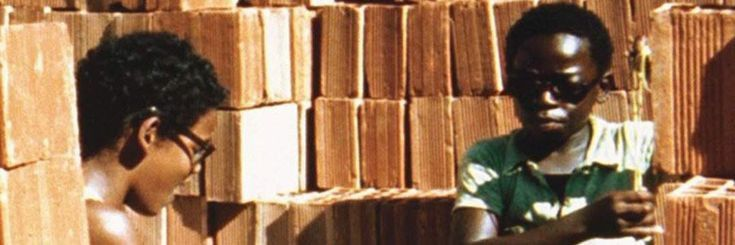

City of God
The city that breeds violence, and the kids who fight to survive

City of God is a sprawling, magnificently told epic about gang life in Rio's favelas, based on years of research and Pualo Lins's firsthand experience growing up in Cicade de Deus.
I wasn't sure how to exactly structure this...so I'm just gonna mention these themes
in the movie and expand on them. Let's start with the one that I believe is really
at the forefront of the film:
Power:
This movie highlights the intoxicating effect of power. I think the most obvious character
that displays this is Li'l Dice. The obsession with power that this kid had just drew
me in. I was highly interested in seeing just how far he will go for what he wants.

Love:
This is arguably not a strong theme but I do want to talk about it. The relationship between
these two characters (I feel) displayed the naiviety of young relationships. They were
both so in love but the relationship could not have worked unless Shaggy let go of his
criminal lifestyle and they basically ran away together(I am a SUCKERfor a "lets run away"
trope. Unfortunately what happened, happened but I really wish they made it) I can't really
find pictures of a couple that I really want to talk about because they dont really exist and they more
so overlap with themes of power? But if you know you know.

I will not lie, I do not think they were meant to be together, I just think she was his dream girl but they were not meant to be
.jpeg)

Brotherhood/Loyalty:
The balance between these two was beautiful to witness. Benny was the only person
who could speak to Lil Ze and in turn I'd like to believe Lil Ze made sure that Benny is always
safe. Looking back? I realise that Benny was really just in this life for the money. He wasn't
into the drugs and the violence perse, whereas Lil Ze was consumed by the power that came with it
(being a ruthless gang leader). I think it was sad how Lil Ze clearly struggled with expressing
emotions. I think he was scared of being lonely (romantically and generally being without Benny)
It was a beautiful thing to witness.
.jpeg)
.jpeg)
.jpeg)